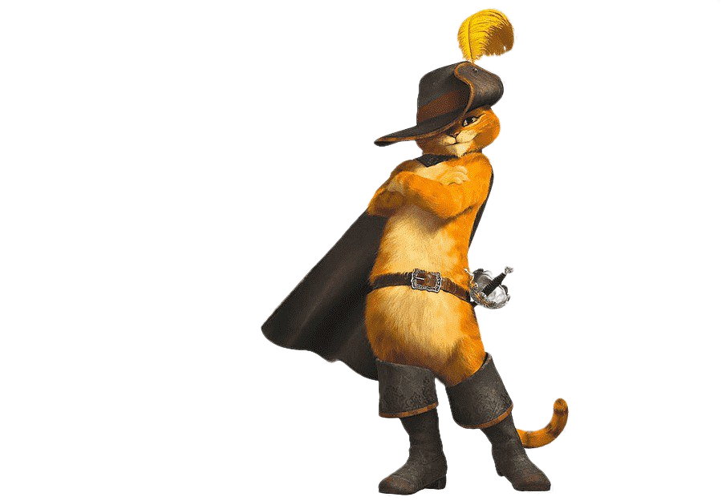
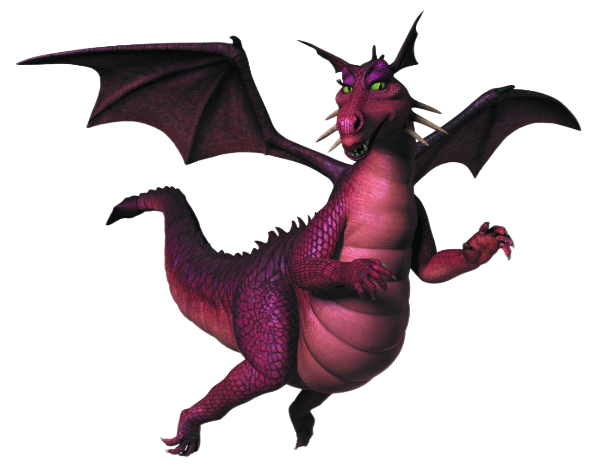
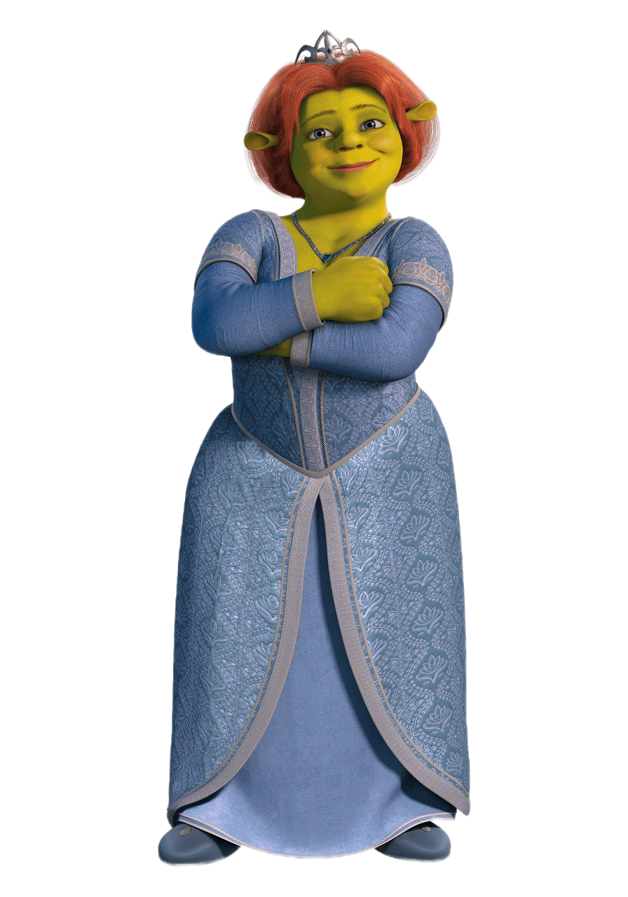

Почему стоит выбрать Shrek Transport Company?
1. Надежный сервис: мы гордимся своей пунктуальностью и надежностью, гарантируя, что вы всегда будете добираться до места назначения вовремя. |
|
2. Комфортабельные транспортные средства: наш автопарк просторный, чистый и ухоженный, что обеспечивает комфортную и плавную поездку для всех пассажиров. |
 |
|  | 3. Опытные водители: наши водители обладают высокой квалификацией и опытом, что гарантирует безопасную и приятную поездку для всех пассажиров. |
4. Доступные цены: мы предлагаем конкурентоспособные цены на наши транспортные услуги, что позволяет вам легко путешествовать, не опустошая свой кошелек. |
 |
5. Превосходное обслуживание клиентов: наша команда стремится предоставлять первоклассное обслуживание клиентов, гарантируя, что все ваши транспортные потребности будут удовлетворены с улыбкой. |